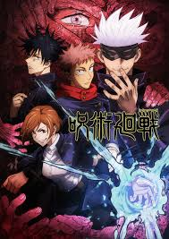
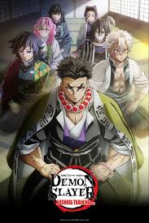

Wikipedia of Anime
Anime
- Introduction
- History
- Japan
- Characters
- How did we create a Anime
- Popular Anime Serias and Movies
Introduction
In 1914, U.S. and European cartoons were introduced to Japan, inspiring Japanese creators like Junichi Kouchi and Seitaro Kitayama, both of whom were considered the "fathers of anime." Few complete animations made during the beginnings of Japanese animation have survived.
Anime, short for the English word "animation," finds its roots in Japan, where it emerged in the early 20th century. The first known Japanese animation dates back to 1917, and over the decades, anime has evolved significantly in terms of artistic style, storytelling techniques, and thematic depth.
The word anime — pronounced "ah-knee-may" — is an abbreviation of the word animation. In Japan, the word is used to refer to all animation. However, outside of Japan, it has become the catch-all term for animation from Japan.
For decades, anime was produced by and for Japan — a local product, with a distinct look-and-feel to not just the artwork but the storytelling, the themes, and the concepts. Over the last forty years, it has become an international phenomenon, attracting millions of fans and being translated into many languages. A whole generation of viewers in the West has grown up with it and are now passing it on to their own children.
Because all things anime tend to be lumped together, it's tempting to think of anime as a genre. It isn't, at least no more than animation itself is a genre, but rather a description of how the material is produced. Anime shows, like books or movies, fall into any number of existing genres: comedy, drama, sci-fi, action-adventure, horror and so on.
History
The history of anime can be traced back to the start of the 20th century, with the earliest verifiable films dating from 1917.[1] Before the advent of film, Japan already had a rich tradition of entertainment with colourful painted figures moving across the projection screen in utsushi-e (写し絵), a particular Japanese type of magic lantern show popular in the 19th century. Possibly inspired by European phantasmagoria shows, utsushi-e showmen used mechanical slides and developed lightweight wooden projectors (furo) that were handheld so that several performers could each control the motions of different projected figures.
The second generation of animators in the late 1910s included Ōten Shimokawa, Jun'ichi Kōuchi and Seitarō Kitayama, commonly referred to as the "fathers" of anime.[4] Propaganda films, such as Momotarō no Umiwashi (1943) and Momotarō: Umi no Shinpei (1945), the latter being the first anime feature film, were made during World War II. During the 1970s, anime developed further, with the inspiration of Disney animators, separating itself from its Western roots, and developing distinct genres such as mecha and its super robot subgenre. Typical shows from this period include Astro Boy, Lupin III and Mazinger Z. During this period several filmmakers became famous, especially Hayao Miyazaki and Mamoru Oshii.
In the 1980s, anime became mainstream in Japan, experiencing a boom in production with the rise in popularity of anime like Gundam, Macross, Dragon Ball, and genres such as real robot, space opera and cyberpunk. Space Battleship Yamato and Super Dimension Fortress Macross also achieved worldwide success after being adapted respectively as Star Blazers and Robotech.
The 1988 film Akira went on to become an international success. Later, in 2004, the same creators produced Steamboy, which became the most expensive anime film. Spirited Away shared the first prize at the 2002 Berlin Film Festival and won the 2003 Academy Award for Best Animated Feature, while Innocence: Ghost in the Shell was featured at the 2004 Cannes Film Festival.
Japan
History
Modern humans arrived in Japan around 38,000 years ago (~36,000 BC), marking the beginning of the Japanese Paleolithic. This was followed from around 14,500 BC (the start of the Jōmon period) by a Mesolithic to Neolithic semi-sedentary hunter-gatherer culture characterized by pit dwelling and rudimentary agriculture.Clay vessels from the period are among the oldest surviving examples of pottery. From around 700 BC, the Japonic-speaking Yayoi people began to enter the archipelago from the Korean Peninsula, intermingling with the Jōmon; the Yayoi period saw the introduction of practices including wet-rice farming, a new style of pottery, and metallurgy from China and Korea.According to legend, Emperor Jimmu (descendant of Amaterasu) founded a kingdom in central Japan in 660 BC, beginning a continuous imperial line.
Land
Japan is bounded to the west by the Sea of Japan (East Sea), which separates it from the eastern shores of South and North Korea and southeastern Siberia (Russia); to the north by La Perouse (Sōya) Strait, separating it from Russian-held Sakhalin Island, and by the Sea of Okhotsk; to the northeast by the southern Kuril Islands (since World War II under Soviet and then Russian administration); to the east and south by the Pacific; and to the southwest by the East China Sea, which separates it from China. The island of Tsushima lies between northwestern Kyushu and southeastern South Korea and defines the Korea Strait on the Korean side and the Tsushima Strait on the Japanese side.
Geologic framework
Japan is one of the world’s most geologically unstable areas. The country experiences some 1,000 tremors annually, most of them minor, though major quakes—as in Tokyo-Yokohama in 1923 and Kōbe in 1995—cause considerable loss of life and widespread destruction. Violent volcanic eruptions occur frequently, and at least 60 volcanoes have been active within historical time. Volcanoes born since 1900 include Shōwa Volcano on Hokkaido and Myōjin Rock off the Beyoneisu (or Bayonnaise) Rocks in the Pacific. Among the major eruptions since 1980 are those of Mounts O (1983) and Mihara (1986) in the Izu Islands and Mount Unzen (1991) in Kyushu. The country’s abundant hot springs are mostly of volcanic origin. Many of the gigantic volcanoes are conical in shape (e.g., Mount Fuji), while others form steep lava domes (e.g., Mounts Dai and Unzen). Conspicuous shield volcanoes (broad, gently sloping volcanic cones) are rare, and extensive lava plateaus are lacking. One of the characteristics of the volcanic areas is the prevalence of calderas (large, circular, basin-shaped volcanic depressions), especially in the northeast and southwest, many of which are filled with water, such as Lakes Kutcharo, Towada, and Ashi.
Characters
A common anime character design convention is exaggerated eye size. The animation of characters with large eyes in anime can be traced back to Osamu Tezuka, who was deeply influenced by such early animation characters as Betty Boop, who was drawn with disproportionately large eyes.
Some Popular Characters
- Goku (Dragon Ball Z)
- Naruto Uzumaki (Naruto)
- Kakashi Hatake (Naruto)
- Monkey D Luffy (One piece)
Goku is introduced as an eccentric, monkey-tailed boy who practices martial arts and possesses superhuman strength. He meets Bulma and joins her on a journey to find the seven wish-granting Dragon Balls. Along the way, he finds new friends who follow him on his journey to become stronger.
He is the Hidden Leaf's Number One Loudest Ninja. He breaks the rules, he has to be the centre of attention, his intelligence sinks below every other ninja, he is untalented in comparison with his fellow Academy students, he is outspoken and egotistical but most importantly: He has a Ninja spirit that never gives up!

Kakashi is renowned throughout the Naruto world for the use of his Sharingan, which he received from his teammate Obito Uchiha, and is revered as the ninja who has copied over a thousand jutsus, earning him the moniker "Copy Ninja Kakashi"
Luffy was born 19 years ago in Foosha Village to Monkey D. Dragon and an unknown woman. Dragon left Luffy in the care of his grandfather, Monkey D. Garp, who did many dangerous things to Luffy to make him stronger, like throwing him down a deep ravine, leaving him alone in the wild, and tying him to a balloon.
How did we create a Anime
Technique. Modern anime follows a typical animation production process, involving storyboarding, voice acting, character design, and cel production. Since the 1990s, animators have increasingly used computer animation to improve the efficiency of the production process.
Popular Anime Serias and Movies
Serias
- Dragon Ball
- One Piece
- Death Note
- Attack on Titan


Movies
- a silent voice
- Your Name
- Jujutsu Kaisen 0
- I Want to Eat Your Pancreas

Anime Facts
- Japan is known for its cultural exports, including anime, manga, video games, and pop music, which have gained a global following.
- Fandoms can form around various media, including books, films, television shows, anime, manga, video games, music, and sports.
- he My Hero Academia fandom, based on the manga and anime series created by Kohei Horikoshi, has a global fanbase known for their love of superheroes and the world of quirks.
- Characters in ‘Spirited Away’ have meaningful names
- The Pokémon anime series has been dubbed into multiple languages and broadcast in over 90 countries.
- Death Note is banned in China
- The Pokémon anime series has explored various themes, including friendship, teamwork, perseverance, and environmental conservation.
- The ramen shop ‘Ichiraku’ in Naruto exists

- The anime and manga fandom encompasses a diverse range of genres, styles, and subcultures, with fans known for their dedication to specific series, characters, and creators.
- Naruto was supposed to be a chef!
- The Pokémon anime series has aired over 1,000 episodes, making it one of the longest-running animated series
- There is a reason the series is called ‘Bleach’

- The Pokémon anime series, first aired in 1997, follows the adventures of Ash Ketchum and his Pokémon partner Pikachu as they travel the world to become Pokémon masters.
- 50 new colours were created for ‘Akira’
- ‘Spirited Away’ is the first anime film to be nominated for an Academy Award, and won!
- The name ‘Pokemon’ comes from English

- The longest-running anime has more than 7,500 episodes
- Pokemon characters were named after fighters

- Kimi no Na Wa is the third highest-grossing anime film of all time!
- ‘Haikyuu’ was created to make volleyball popular
- The Pokémon anime series features recurring characters such as Team Rocket, who serve as comedic antagonists pursuing Pikachu.